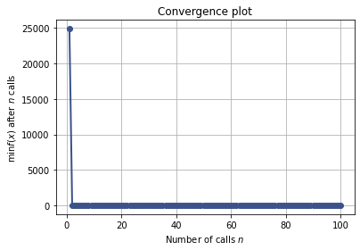

Single Bayesian Optimization
Contents
Single Bayesian Optimization#
#!pip install scikit-optimize
#!pip install httpimport
import numpy as np
import matplotlib.pyplot as plt
#from mod3_gen import *
import httpimport
url = 'https://raw.githubusercontent.com/cfteach/brds/main/other/mod3_gen.py'
url2 = 'https://raw.githubusercontent.com/cfteach/brds/main/other/'
#with httpimport.remote_repo(url):
# import mod3_gen
module_object = httpimport.load('mod3_gen', url2)
#load an unknown function... BO is agnostic to what is optimizing...
f = module_object.f_1
print_fun = module_object.print_fun
# uncomment these lines if you want to take a look at the unknown function
#noise_level = 0.1
#print_fun(f, noise_level=noise_level)
from skopt import gp_minimize
gp_res = gp_minimize(f, # the function to minimize
[(-2.0, 2.0)], # the bounds on each dimension of x
acq_func="EI", # the acquisition function
n_calls=25, # the number of evaluations of f
n_random_starts=5, # the number of random initialization points
noise=0.1**2, # the noise level (optional)
random_state=1234) # the random seed
#"x^*=%.4f, f(x^*)=%.4f" % (res.x[0], res.fun)
#print(res)
print(gp_res.x, gp_res.fun)
[-0.29561219180149045] -0.9089128846342238
from skopt.plots import plot_convergence
plot_convergence(gp_res);

Internal behavior of BO#
from skopt.plots import plot_gaussian_process
plt.rcParams["figure.figsize"] = (8, 14)
def f_wo_noise(x):
return f(x, noise_level=0)
for n_iter in range(5):
# Plot true function.
plt.subplot(5, 2, 2*n_iter+1)
if n_iter == 0:
show_legend = True
else:
show_legend = False
ax = plot_gaussian_process(gp_res, n_calls=n_iter,
objective=f_wo_noise,
noise_level=noise_level,
show_legend=show_legend, show_title=False,
show_next_point=False, show_acq_func=False)
ax.set_ylabel("")
ax.set_xlabel("")
# Plot EI(x)
plt.subplot(5, 2, 2*n_iter+2)
ax = plot_gaussian_process(gp_res, n_calls=n_iter,
show_legend=show_legend, show_title=False,
show_mu=False, show_acq_func=True,
show_observations=False,
show_next_point=True)
ax.set_ylabel("")
ax.set_xlabel("")
plt.show()
Compare to Random Search#
from skopt import dummy_minimize
dummy_res = dummy_minimize(f, # the function to minimize
[(-2.0, 2.0)], # the bounds on each dimension of x
n_calls=25, # the number of evaluations of f
random_state=1234) # the random seed
from skopt.plots import plot_convergence
plot = plot_convergence(("dummy_minimize", dummy_res),
("gp_minimize", gp_res))
#,true_minimum=0.397887)#, yscale="log")
plot.legend(loc="best", prop={'size': 6}, numpoints=1)
<matplotlib.legend.Legend at 0x15ec17c10>